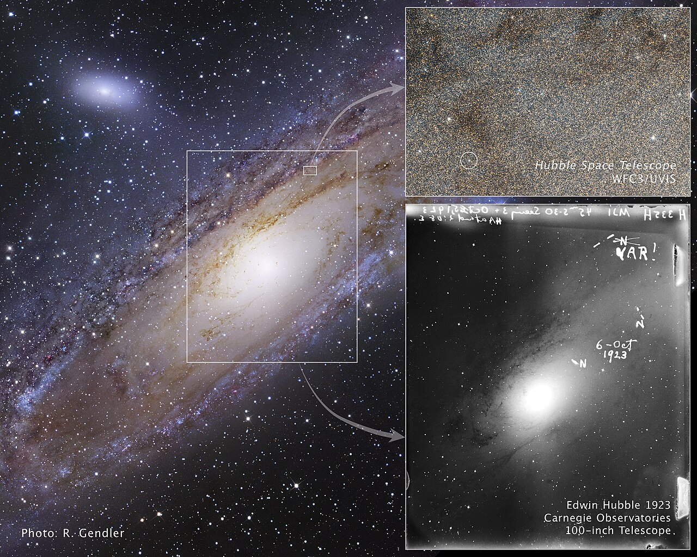
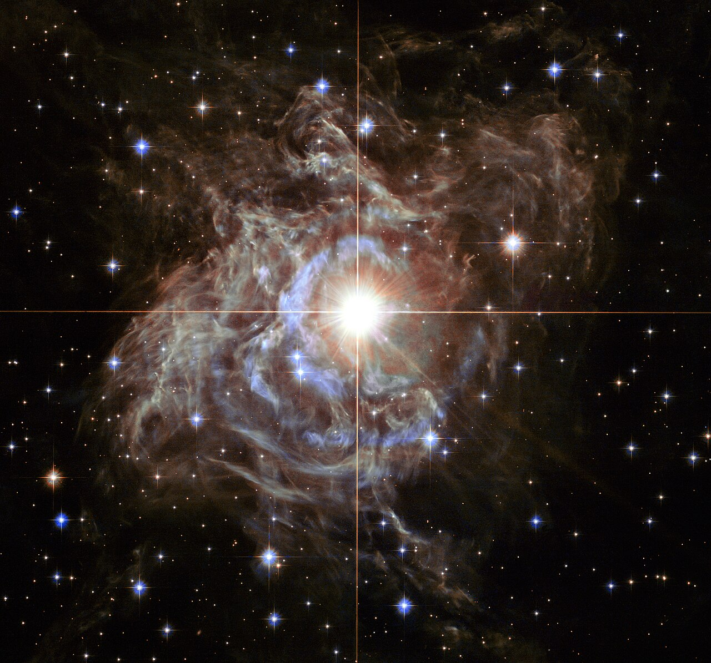
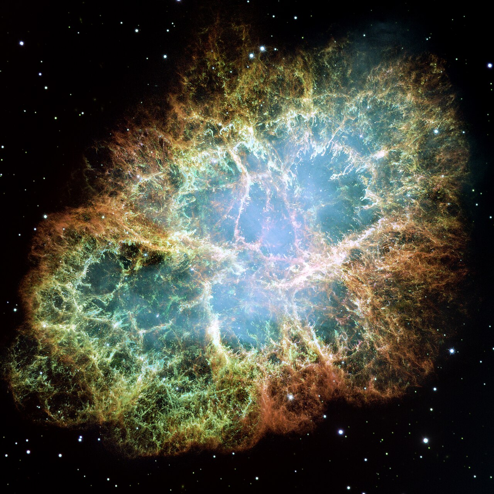
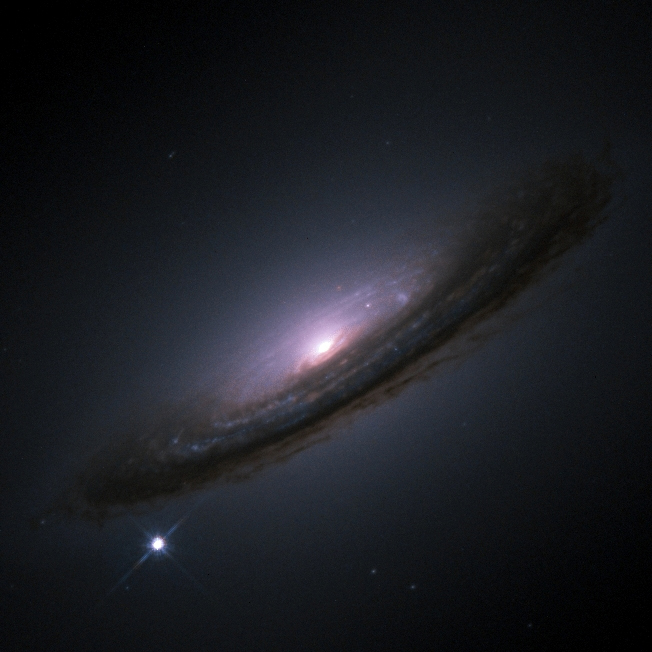

동기 유발
사진 건판 위의 "VAR!"
교과서 p. 67학습 목표
- 광도 곡선으로 맥동 변광성과 폭발 변광성을 구분할 수 있다.
- 초신성 관측 자료를 통해 알 수 있는 과학적 사실을 설명할 수 있다.

NASA, ESA, Z. Levay (STScI) · 건판: Carnegie Observatories, CC BY 4.0
퍼블릭 도메인
허블은 처음에 'N(신성)'이라고 적었던 점을 지우고 'VAR!'라고 다시 썼다.
이 별 하나 때문에 '우주는 우리은하가 전부'라는 생각이 무너졌다. 왜 그랬을까?
이 별 하나 때문에 '우주는 우리은하가 전부'라는 생각이 무너졌다. 왜 그랬을까?
V1은 세페이드 변광성 → 주기로 광도를 알면 거리를 알 수 있다 → 안드로메다가 우리은하 밖에 있다는 결론. 레빗이 소마젤란은하에서 발견한 주기–광도 관계가 그 열쇠였다는 이야기로 개념 2를 엽니다. 운영안 3차시.
핵심 개념 1
맥동 변광성
교과서 p. 67 ~ 68부풀었다 줄었다 하는 별
- 변광성: 시간에 따라 밝기가 변하는 별. 별 자체의 변화로 밝기가 변하는 맥동 변광성과 폭발 변광성이 있다. (식쌍성은 겉보기로만 밝기가 변한다.)
- 맥동 변광성: 별이 주기적으로 팽창·수축하며 반지름과 표면 온도가 변해 광도가 변한다. 주계열을 벗어난 거성·초거성 단계에서 나타난다.
- 광도 L = 4πR²σT⁴이므로 밝기는 반지름보다 온도에 더 민감하다. 그래서 가장 밝을 때는 가장 클 때가 아니라 가장 뜨거울 때(수축을 마치고 팽창을 시작할 무렵)이다.
| 종류 | 변광 주기 | 밝기 변화 | 특징 |
|---|---|---|---|
| 세페이드 변광성 | 약 1 ~ 100일 | 약 0.5 ~ 2등급 | 노란 초거성, 주기–광도 관계 → 거리 측정 |
| 거문고자리 RR형 | 약 0.2 ~ 1일 | 약 1등급 | 구상 성단에 많음, 절대 등급 거의 일정(약 +0.6) |
| 미라형 (장주기) | 약 100 ~ 1000일 | 2.5 ~ 11등급 | 적색 거성, 밝기 변화가 매우 큼 |

NASA, ESA, Hubble Heritage Team
시뮬레이션 1맥동하는 세페이드: 반지름 · 온도 · 광도
왼쪽: 별의 크기와 색. 오른쪽: 반지름(파랑)·온도(빨강)·광도(노랑)의 변화. 온도 변화 폭을 0으로 하면 광도 곡선은 어떻게 될까? 실제 세페이드(케페우스자리 델타)는 반지름 약 ±8%, 온도 약 5500 ~ 6800 K로 변한다.
핵심 개념 2
세페이드 변광성의 주기–광도 관계
교과서 p. 68주기를 재면 거리가 보인다
- 1912년 레빗은 소마젤란은하의 세페이드 변광성들이 주기가 길수록 더 밝다는 사실을 발견했다. 이 별들은 모두 거의 같은 거리에 있으므로 겉보기 밝기 차이가 곧 광도 차이이다.
- 주기–광도 관계: 변광 주기만 재면 절대 등급(M)을 알 수 있다 → 겉보기 등급(m)과 비교해 거리지수로 거리를 구한다.
- 세페이드는 태양보다 수천 ~ 수만 배 밝아 수천만 광년 떨어진 외부 은하에서도 관측된다.
MV ≈ −2.43 (log P − 1) − 4.05 P: 변광 주기(일). 우리은하 세페이드의 HST 시차로 보정한 관계(Benedict 외, 2007)
핵심 개념 3
폭발 변광성: 신성과 초신성
교과서 p. 69 ~ 70(1) 신성과 초신성
- 신성: 쌍성계에서 백색 왜성 표면에 동반성의 수소가 쌓이다 폭발적으로 핵융합하며 수천 ~ 수십만 배 밝아지는 현상. 백색 왜성은 살아남아 반복될 수 있다.
- 초신성: 별 전체가 폭발해 한 은하 전체만큼 밝아지는 현상
- Ia형: 백색 왜성이 동반성의 물질을 받아 약 1.4 M☉(찬드라세카르 한계)에 이르면 통째로 폭발 → 스펙트럼에 수소선이 없다, 최대 절대 등급이 약 −19.3으로 거의 일정
- II형: 질량이 큰(약 8 M☉ 이상) 별의 중심핵이 붕괴하며 폭발 → 수소선이 있다, 중성자별·블랙홀을 남긴다
- 초신성은 철보다 무거운 원소를 만들어 우주에 퍼뜨린다. 우리 몸의 원소 일부도 초신성에서 왔다.

NASA, ESA, J. Hester and A. Loll

NASA/ESA, The Hubble Key Project Team
시뮬레이션 2초신성 광도 곡선 비교 · 표준 촛불로 거리 재기
세로축: 겉보기 등급. Ia형은 최대 밝기 뒤 빠르게 어두워지고, II형은 약 100일 동안 밝기가 거의 일정한 '평탄 구간'을 보인다. 최대 겉보기 등급만 읽으면 Ia형의 거리를 구할 수 있다.
데이터 탐구
우주 거리 사다리 오르기 · 레빗 법칙 보정과 은하의 거리
탐구 개요
천문학자들이 실제로 은하까지의 거리를 재는 3단계를 그대로 따라 한다. ① 시차로 거리를 아는 우리은하 세페이드로 주기–광도 관계를 보정하고, ② 그 관계를 대마젤란은하의 세페이드 80개에 적용해 거리를 구한 뒤, ③ 처녀자리 은하단의 나선 은하 M100까지 거리를 잰다.
1단 · 보정우리은하 세페이드 10개: 시차 → 거리 → 절대 등급. log P–M 산점도에 회귀선을 긋는다(기울기, 절편).
2단 · 대마젤란은하모두 같은 거리에 있으므로 log P–m 그래프의 기울기는 같고 절편만 다르다. 절편 차이 = 거리지수!
3단 · M100HST로 찾은 세페이드 몇 개의 주기와 겉보기 등급에 보정된 관계를 적용해 거리를 구한다.
평가각 단계의 불확실성이 다음 단계로 어떻게 전해지는지 생각한다.
데이터 랩레빗 법칙 회귀와 거리 사다리
가로축 log P(일), 세로축 등급(위로 갈수록 밝다). 우리은하 세페이드는 성간 소광을 보정한 값이다. 대마젤란은하·M100 자료는 실제 관측 관계와 분산을 따르도록 만든 수업용 표본이다.
📋 1단 자료 · 우리은하 세페이드 (HST·Gaia 시차)
분석 질문
1. 1단에서 구한 주기–광도 관계식을 써 보자. 주기 10일인 세페이드의 절대 등급은?
M ≈ −2.4 log P − 1.6 정도(기울기 약 −2.4, 절편 약 −1.6). 주기 10일이면 M ≈ −4.0등급. 태양(+4.8)보다 약 9등급, 즉 약 3000배 밝다.
2. 2단에서 대마젤란은하의 거리지수와 거리는? 레빗이 '같은 거리'의 별을 쓴 것이 왜 중요했을까?
m − M ≈ 18.5 → r = 10(18.5+5)/5 ≈ 5.0×10⁴ pc ≈ 16만 광년. 모든 별이 같은 거리에 있으면 겉보기 등급의 차이가 곧 광도의 차이이므로, 거리를 몰라도 '주기가 길수록 밝다'는 관계의 모양(기울기)을 찾을 수 있었다. 거리(절편)는 나중에 시차로 보정하면 된다.
3. 3단에서 구한 M100까지의 거리는? 1단의 절편이 0.1등급 틀렸다면 거리는 몇 % 달라질까?
m − M ≈ 31.0 → 약 1.6×10⁷ pc(약 5200만 광년). 절편 0.1등급 오차 → 거리 100.02 ≈ 1.047배, 약 5% 오차가 모든 은하 거리에 그대로 전해진다. 그래서 가이아 위성의 정밀한 시차(1단)가 우주 팽창 속도(허블 상수) 측정의 핵심이다.
형성 평가
개념 확인 문제
그림·자료 출처
사진: NASA/ESA/Hubble, Carnegie Observatories, 퍼블릭 도메인 사진(Wikimedia Commons 경유). 우리은하 세페이드는 Benedict 외(2007) HST 시차 및 Gaia 값을 바탕으로 정리한 교육용 값, 대마젤란은하·M100 자료는 OGLE와 HST Key Project의 관계·분산을 따르는 수업용 표본입니다. 시뮬레이션은 직접 만들었습니다.